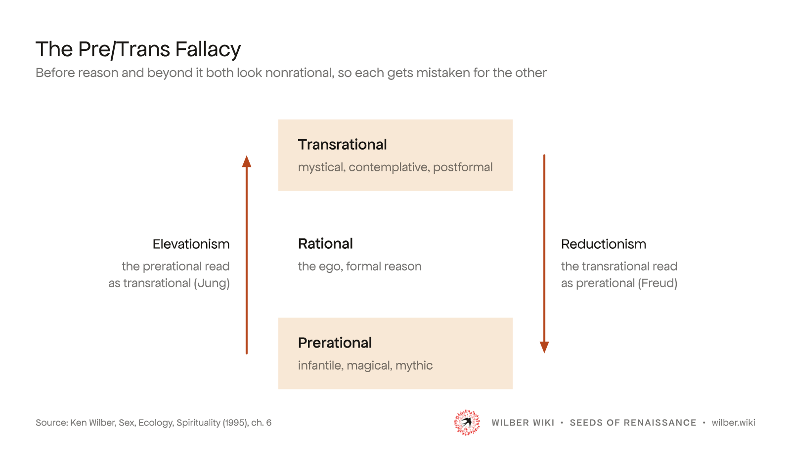
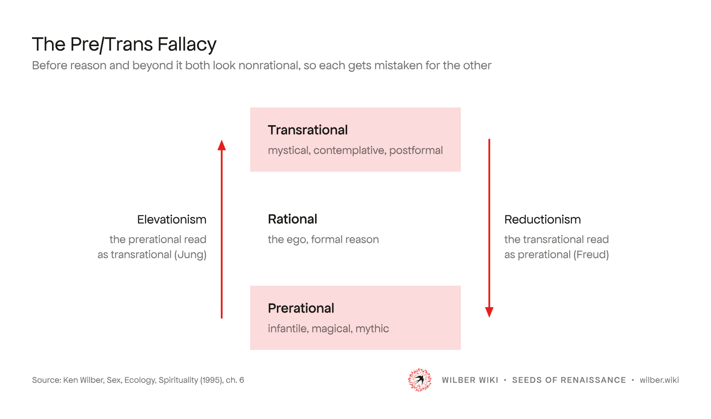
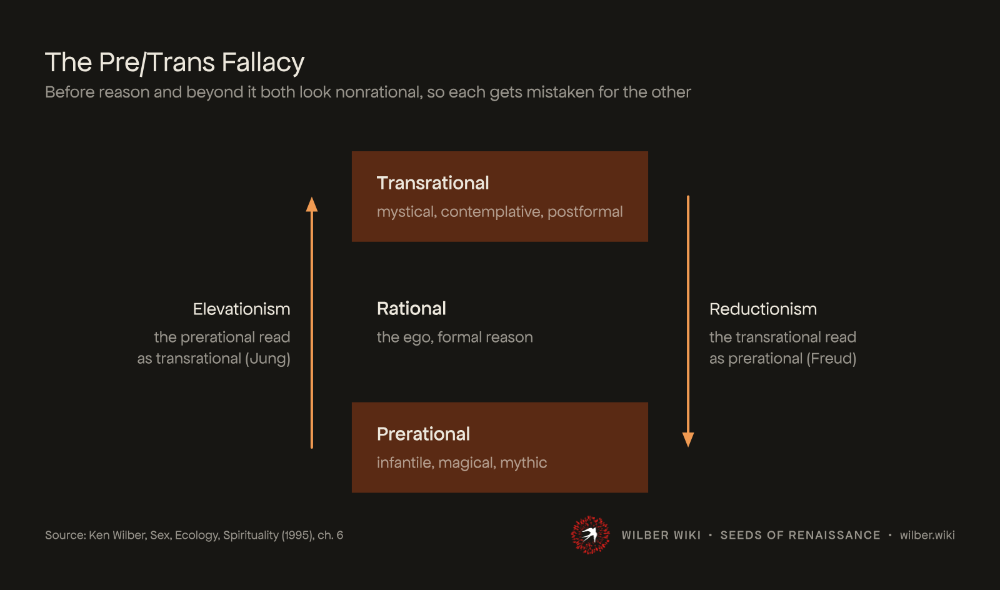
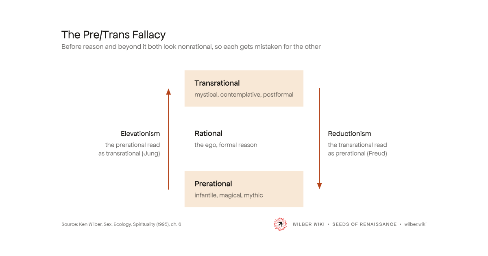
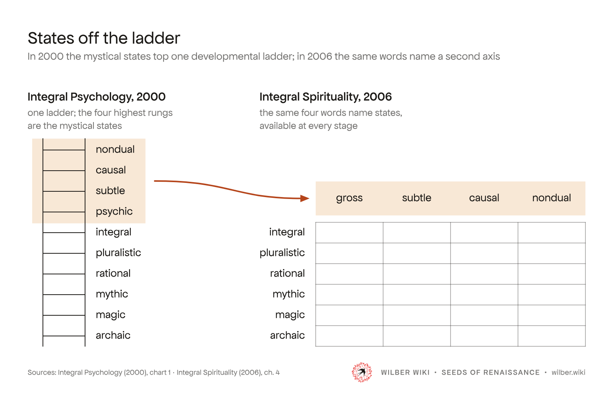
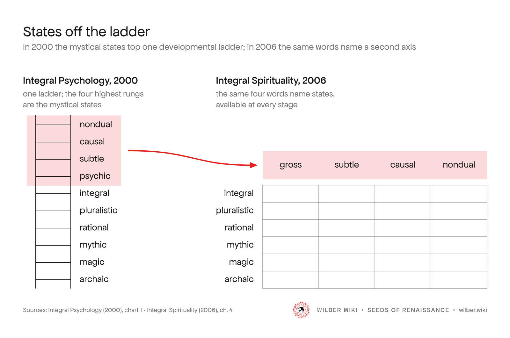
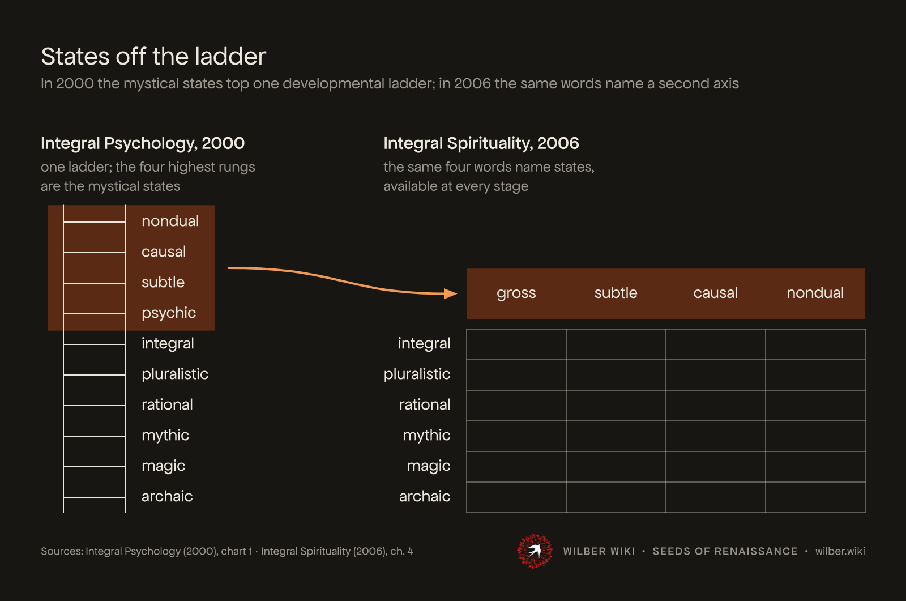
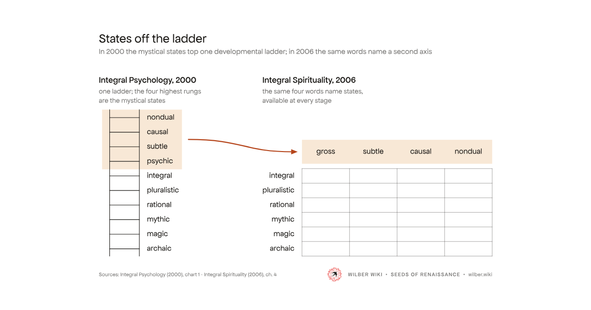
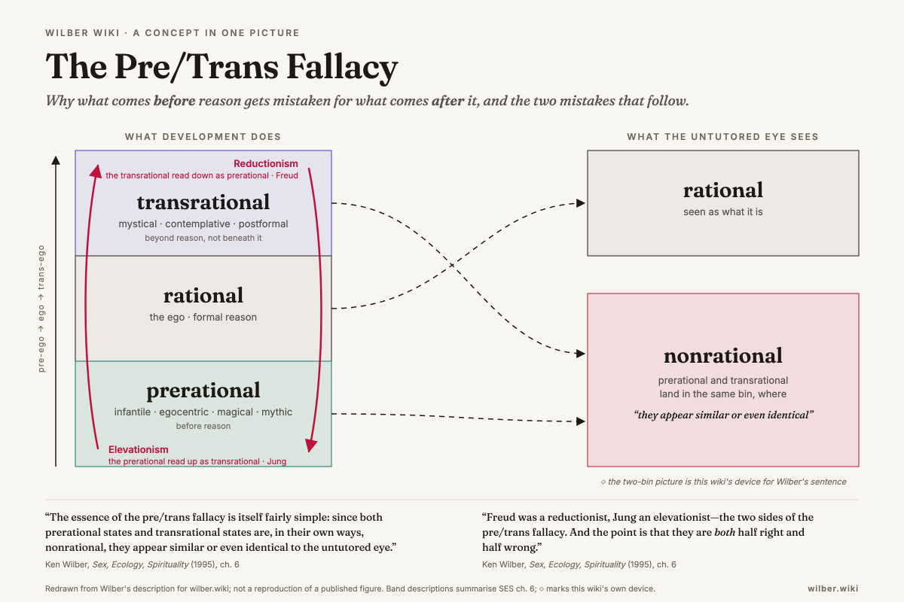
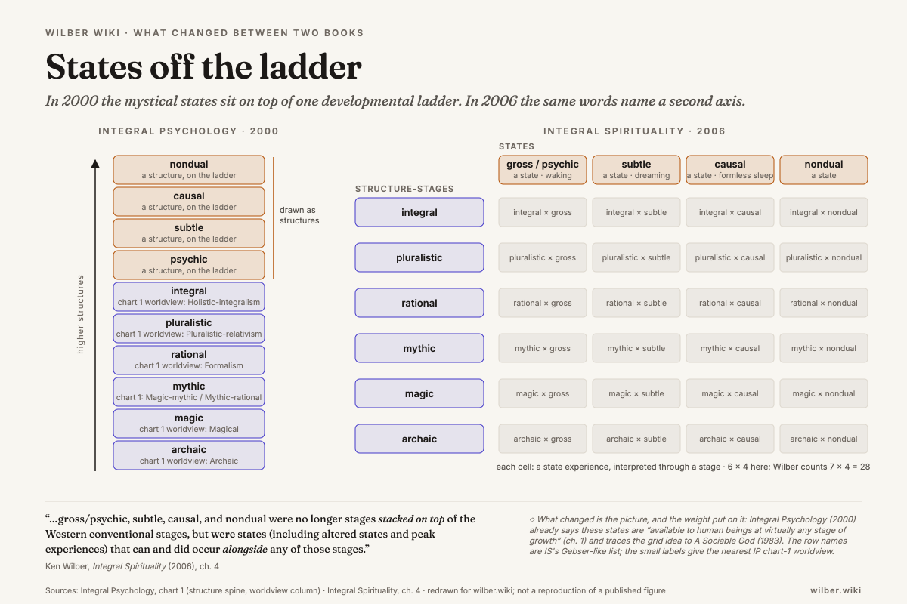

wilber.wiki · figures · review page · 2026-10-26
Two pieces redrawn from scratch on the Seeds of Renaissance diagram system: its typography (Apfel Grotezk, no bold), its drawing rules (ink lines, solid arrowheads, panels without outlines, one accent), its layout, exports and checks. What is wilber.wiki's own: the colour and accent, and the signature, which names both. The written rules are in docs/figure-design.md. Nothing here is on the site.
One idea: before reason and beyond it both look nonrational, so each gets mistaken for the other. Three tiers; the two nonrational ones share the tint; the two errors are the only accent marks, and each skips the rational tier. Cut from the earlier build: the "untutored eye" bins, the dashed feeds, the axis arrow, the on-canvas quotations and the ◇ mark.




One idea: in 2000 the mystical states top one ladder; in 2006 the same four words name a second axis. A literal ladder, its four highest rungs in the tint; one accent arrow carrying them to the top of a lattice whose rows sit level with the lower rungs; the cells left open. Cut from the earlier build: twenty-four boxed cells, the "a structure, on the ladder" repeats, chart-1 worldview names on every rung, the state glosses, the axis tags, the on-canvas quotation and note.




The rejected 2026-10-25 build beside the new one. Before: two typefaces, four colour roles, outlined rounded boxes on everything, dashed and dotted lines, crowded small labels, quotations on the canvas. After: one face, one accent, panels without outlines, two or three marks per figure.


Credit: the typography, drawing rules, layout, exports and checks are the Seeds of Renaissance diagram system (Life Itself), applied as written; text is set as outlines with its outline.py approach so the SVGs render without fonts. The full table of what we follow and where we differ is in the spec; in short:
| Follow | Apfel Grotezk Regular and Mittel, no bold; SoR's type scale at 1600 px; 4 px lines for what matters, 2 px for scaffolding, round caps, solid arrowheads, no dashes; panels in the tint with no outline and 40 px padding; labels on the thing named, no legends; title and grey subtitle top left, source bottom left, signature bottom right, 72 px margin; tight SVG for the page and padded PNG for sharing; must read at 400 px and in black and white. |
|---|---|
| Ours | The palette (below). The signature: SoR mark plus WILBER WIKI · SEEDS OF RENAISSANCE · wilber.wiki. Conventions for quotation, label and interpretation, locators and faithfulness. The animation layer (page only, settles on the static frame). An Open Graph crop and a night render among the exports. |
Why rust: the site already uses an amber family (the roadmap star, #d97706); a warm red-brown with a cream tint reads as book paper and ink, prints well in greyscale, and keeps 5.5:1 as text on white. The two renders above in SoR red are there so the choice can be made by eye.
wilber.wiki from the line, or keep it?